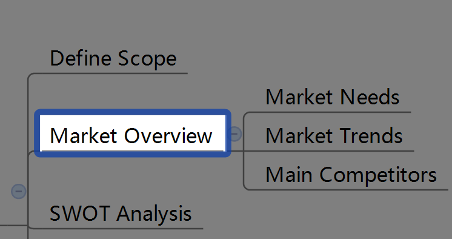
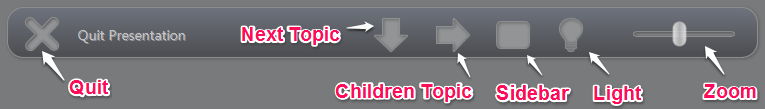
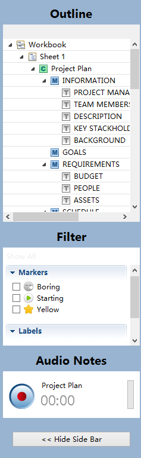

Presentation
To promote the teamwork or check the completed work, we need to display the mind map. In XMind Pro, the Presentation Mode is an alternative "full-screen" view that allows you to browse your map with a minimum of distraction. It makes the map appear on the whole screen rather than in a window. You can use shortcut keys and a hovering toolbar in this mode to view and navigate map easily.
Three ways to Enter Presentation Mode:
- Choose "View - Presentation" on the menu.
- Use shortcut key 'F5'.
- If you are using Windows, you can also use Command line: "xmind -p xxx.xmind".
- Use 'Enter' and 'Tab':
- Enter key brings you to see sibiling topics one by one.
- Tab key brings you to subtopic.
- Use Arrow key:
- Up and Down keys let you navigate the topics in the same level.
- Right and Left keys let you navigate to children topic and back to parent topic.
- Use 'Space' key: This will let you navigate all topics sequentially.
- Ues Outline:
- Open Sidebar through Button Panel on the hovering toolbar.
- Select topic in the outline.
- Selected topic will move to the center of screen hightlighted.
Note:
- Any selected topic will move to screen center automatically.
- If you are focusing on the Central Topic, the keys may bring different result:
- Enter: Move to floating topics, if there are any in the map.
- Space: Move to the first Main Topic.
- Up or Down keys: Move to Main Topics.
- Move the mouse to the bottom of the screen.
- You can see a hovering Toolbar Panel with six buttons.
- Quit: Click to quit presentation mode.
- Go Next: Click to move to next brother topic.
- Go Into: Click to move to children topic.
- Sidebar: Click to open sidebar.
- Turn Light On/Off: Click to unlock map to see the whole map.
- Zoom: Drag and move slide to Zoom map.

The Presentation Sidebar:- Open the sidebar through the Toolbar panel.
- There are three functionalities in the Sidebar:
- Outline: For navigating any a topic directly.
- Filter: For finding the target topic with the slected marker or label quickly.
- Audio Notes: For recording the voice and saving it as an attachment of current topic.

To exit the Presentation:- Press 'Esc' directly.
- Click "Quit" on the Toolbar Panel.